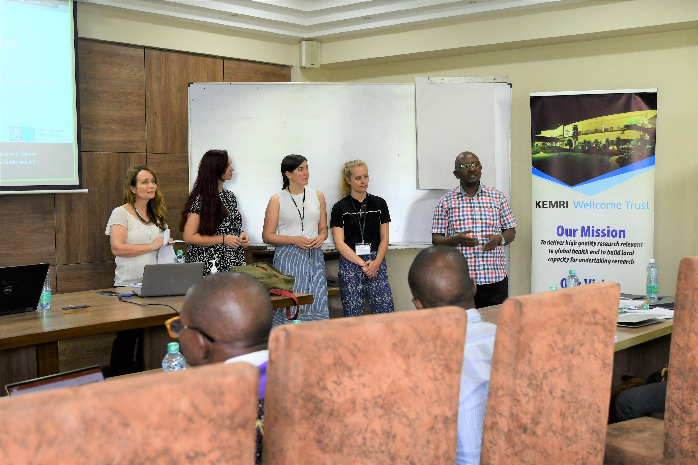

News

- Interested in a funded PhD place in the group? We have four projects being offered as part of the GW4 BioMed MRC DTP
; - A. Adiposity across the life course; B. BMI Network Analysis; C. Genetics of BMI ; D. Inflammation in Myeloma . Applications close on 4th November 2024. Supervisor contact details can be found alongside project descriptions at the links above. Here, for more information. - May 2024: Marisa gave a talk at the University of Bristol ‘Integrating Health Research - Interdisciplinary Showcase & Networking’ event: ‘Using large cohort studies to identify scar-associated genetic variants for mechanistic testing in mouse and zebrafish models.’ by Oscar Peña Cabello & Marisa Cañadas Garre.
- May 2024: Maryam Makanvandjoined the LongITools team in March as a Senior Research Associate. She will work on analyses exploring associations between air pollution, noise and the built environment and cardiovascular and metabolic health. WELCOME TO THE TEAM, MARYAM!!!
- February 2024: Lucy will be working as an honorary researcher at Cancer Council Victoria in Melbourne Australia for a month in March 2024. Here, she will be working with A/Prof Brigid Lynch to explore whether methylation signals altered by physical activity are associated with cancer outcomes. She will also be working with Professor Andrew Spencer's group at Monash University to develop a project exploring proteomic signatures of multiple myeloma and its precursors.
- February 2024: Alec McKinlayhas just returned from a research placement with Prof David Evans' Genetic Epidemiology group in the Institute for Molecular Biosciences,University of Queensland.
- January 2024: Marisa Canadas Garrejoined the team as a Senior research Associate working on the biological mechanisms behind human scarring in ALSPAC. WELCOME TO THE TEAM, MARISA!!!
- Oct 2023: Check out news of the latest publication from the group here..
- Oct 2023: Nic, Laura and Maddy attended the European Association for the Study of Diabetes 2023 annual meeting in Hamburg (2-6 October)
Maddy wrote a blog post on the MRC IEU website. For some reflections on the meeting, see Maddy's post here. - Sep 2023: David has left the group to start his own lab as an Assistant Professor-Research at Pennington Biomedical Research Center at Louisiana State University in Baton Rouge, Louisiana
David is building a lab in molecular epidemiology and bioinformatics in the department of Population and Public Health Sciences. We look forward to our ongoing and future collaborations and wish him the best. Visit the PBRC website here. - Sep. 2023: Lucy Goudswaard attended HUPO in Busan, South Korea
Lucy attended the Human Proteomics Organization (HUPO) 2023 conference in Busan, South Korea in September. Lucy presented her work "Characterizing the effect of adiposity on cardiometabolic traits and the circulating proteome in Qatar biobank”. - Aug. 2023: Andrei passed his PhD viva with minor corrections. Congratulations!
- July 2023: Fran attended the Nutrition 2023 conference in Boston, USA (22-25 July). She presented a poster titled "Investigating Eating Architecture: how precise does time of eating have to be?".
- June 2023: Fran attended the 2023 International Conference on Diet and Activity Methods (ICDAM) in Limerick, Ireland (26-29 June). She presented a poster titled "Eating architecture from childhood to adolescence and its relationship with an obesogenic dietary pattern".
- June 2023: Emma Hazelwood attended the 2023 European Society for Human Genetics (ESHG) conference in Glasgow, Scotland (10-13 June). She presented a poster titled "Identifying metabolic features of colorectal cancer liability using Mendelian randomization".
- May 2023: Andrei has begun a 6 month transitional postdoctoral visit to the Oxford Big Data Institute
Andrei will be working in the group of Benjamin Schuster-Böckler, working on identifying possible intermediate cellular traits between BMI and esophageal cancer. Visit the Schuster-Böckler here here. - Apr. 2023: CONGRATULATIONS Ana !!
Ana's study "Prenatal urban environment and blood pressure trajectories from childhood to early adulthood." has been shared on MedRxiv. Read it here here.. - Apr. 2023: Emma H. is visiting the O'Mara Lab at the QIMR Berghofer Medical Research Institute
Emma is spending just over a month visiting and working with the Tracy O'Mara lab in Brisbane, Australia to exchange ideas and collaborate on shared interests in cancer research. Visit the O'mara lab here.. - Apr. 2023: CONGRATULATIONS Charlie !!
Charlie's study "Application of Mendelian randomization to explore the causal role of the human gut microbiome in colorectal cancer" has been published in Scientific Reports. Read it here here. - Mar. 2023: Alec McKinlay attended the 2023 International Statistical Genetics Workshop held by Institute for Behavioural Genetics, University of Colorado Boulder.
- Mar 2023: CONGRATULATIONS Gus !!
Gus's study "Variation in ERAP2 has opposing effects on severe respiratory infection and autoimmune disease" has been published in American Journal of Human Genetics. Read it here here. - Mar. 2023: CONGRATULATIONS Laura !!
Laura C won a best poster prize at the GRC Metabolomics and Human Health Conference in Lucca (Barga), Italy. - Mar. 2023: Maddy S, Laura C, David H, and Nic T attended the GRC Metabolomics and Human Health Conference in Lucca (Barga), Italy.
- Feb. 2023: Lucy is visiting the Suhre Lab at Weill Cornell Medicine-Qatar
Lucy is spending a few weeks visiting and working the Karsten Suhre's lab in Education City near Doha, Qatar. Visit the Suhre lab here. - Nov. 2022: Maddy S, Emma H, Lucy G, and Andrei C attended the Molecular Epidemiology Group (MEG-UK) Meeting in Edinburgh.
- Nov. 2022: Congratulations Emma H. !!
Emma H won the Best Platform Presentation prize at the Molecular Epidemiology Group (MEG-UK) Meeting in Edinburgh. - Nov. 2022: KEMRI | Wellcome Trust MR Course
Kaitlin and Lucy helped teach a Mendelian Randomization course at KEMRI|Wellcome Trust in Kilifi, Kenya. Read more about the course and experience here.

- Oct. 2022: Emma H, Lucy G, and David H attended the American Society of Human Genetics (ASHG) Conference in Los Angeles.
- Sep. 2022: Maddy S, and Andrei C attended the International Genetic Epidemiology Society Meeting (IGES) in Paris.
- Jun. 2022: Lucy G attended the European Society of Human Genetics (ESHG) Conference in Vienna.
- Jun. 2022: Maddy S, Fran I, and Laura C attended the Metabolomics Conference in Valencia.
- Apr. 2022: FANTASTIC WORK Emma H. !!
Emma H.'s study "Identifying molecular mediators of the relationship between body mass index and endometrial cancer risk: a Mendelian randomization analysis." has been published in BMC Medicine and has been featured in hundreds of news stories. Read it here. - Feb 2022: GREAT WORK Lucy !!
Lucy's study "Higher body mass index raises immature platelet count: potential contribution to obesity-related thrombosis." has been published in Platelets. Read it here. - Jan 2022: GREAT WORK Andrei !!
Andrei's study "A framework for research into continental ancestry groups of the UK Biobank." has been published in BMC Human Genomics. Read it here. - Jan 2022: CONGRATULATIONS Caroline !!
Caroline's study "Adiposity, metabolites, and colorectal cancer risk: Mendelian randomization study" has been recognized as one of the best Oncology research articles published in BMC Medicine, by their editors. See more about it here. - Jan 2022: GREAT WORK LAURA !!
Laura's study "Epigenetic Regulation of F2RL3 Associates with Myocardial Infarction and Platelet Function." has been published in Circulation Research. Read it here. - Jan 2022: Andrei's UK Biobank population structure has been accepted for publication in BMC Human Genomics.
- Jan 2022: Laura and David's metaboprep paper has been accepted for publication in Bioinformatics.
- Dec 2021: Ana's study on the association of childhood abuse on cardiometabolic health in young adulthood has been published in Journal of the American Heart Association here.
- Nov 2021: CONGRATULATIONS Lucy !!
Lucy was awarded the "best talk" in the epidemilogoy section of the 5th Annual Meeting of the Bristol Heart Institute for her work entitled "Combining Mendelian Randomization and Randomized Control Trial Study Designs to Determine Effects of Adiposity on the Plasma Proteome". - Nov 2021: CONGRATULATIONS Emma !!
Emma was awarded the "NCRI Award" for a high quality abstract at the NCRI Cancer Conference. Her study entitled "Identifying molecular mediators of the relationship between body mass index and endometrial cancer risk: a Mendelian randomization analysis" was presented as a talk and in a poster. Read her abstract here. - Nov 2021: GREAT WORK ANA !!
Ana, Kaitlin and Nic's study "MC3R links nutritional state to childhood growth and the timing of puberty." has been published in Nature. Read it here. - Oct 2021: CONGRATULATIONS LUCY !!
Lucy Goudswaard won second place in the IGES 2021 poster competition for her work entitled "Combining Mendelian Randomization and Randomized Control Trial Study Designs to Determine Effects of Adiposity on the Plasma Proteome" at IGES 2021. - Oct 2021: Maddy and Kaitlin participated in FUTURES2021 at Futures in Schools taking research directly into classrooms to engage the young. Find out more here.
- Oct 2021: CONGRATULATIONS Caroline !!
Caroline is a IGES 2021 Neel Award Finalists (best work from a post-doc) for her work and talk titled "Metabolic features of colorectal cancer liability: life course study integrating genetic risk with repeated metabolomics". More info here. - Oct 2021: Lucy has a talk titled "Combining Mendelian Randomization and Randomized Control Trial Study Designs to Determine Effects of Adiposity on the Plasma Proteome" at IGES 2021 here.
- Oct 2021: Andrei and David each have posters at IGES 2021 here.
- Oct 2021: Vanessa, Laura, Caroline, Emma, and Nic's study "The blood metabolome of incident kidney cancer: A case-control study nested within the MetKid consortium." has been published in PLoS Med here.
- Sept. 2021: Ana gave a talk titled "How does childhood maltreatment influence cardiovascular disease? A sequential causal mediation analysis" at the World Congress of Epidemiology 2021 here.
- Sept. 2021: Vanessa and Caroline's new study "Investigation of the interplay between circulating lipids and IGF-I and relevance to breast cancer risk: an observational and Mendelian randomization study." has been published in Cancer Epidemiology, Biomarkers & Prevention here.
- July 2021: Lucy's Study "Effects of adiposity on the human plasma proteome: observational and Mendelian randomisation estimates" has been published in the International Journal of Obesity here.
- July 2021: Laura and David's metaboprep package has been archived on bioRxiv here.
- July 2021: The 2021 MR Conference was attended by many in the group, with presentations from Emma H. (oral), Caroline, & Andrei.
Go to the Publications page for the posters. - June 2021: David has had an abstract on causal estimates of BMI on metabolite response traits accepted to Metabolomics 2021. More about the conference here.
- May 2021: Ana's study on childhood maltreatment and cardiovascular disease has been published in the International Journal of Epidemiology. Read it here.
- May 2021: Laura's giagantic collaborative GWAS work with MAGIC on glycemic traits in trans-ancestral groups has been published in Nature Geneitcs. Read it here.
- May 2021: Kaitlin's manuscript on the impact of coding variation at MC4R influencing obesity has been published in Nature Medicine. Read it here, and listen to a BBC podcast on the study here, or here.
- May 2021: Ana's study on diet quality and major depressive disorder has been published in Clinical Nutrition. Read it here.
- May 2021: Emma V's The Elizabeth Blackwell Institute for Health Research "Integrating Health Research: Mechanisms to Populations" strand has officially launched.
- March 2021: Kaitlin's manuscript on the impact of coding variation at MC4R influencing obesity has been accepted for publication in Nature Medicine.
- January 2021: Kaitlin co-authored a blog post on the MRC-IEU's IEUREKA blog. "Using genetics to understand the relationship between young people’s health and educational outcomes". Read it here.
- December 2020: Caroline's study "Adiposity, metabolites, and colorectal cancer risk: Mendelian randomization study" has been published in BMC Medicine. Read it here.
- Sept 2020: Emma Hazelwood and Maddy Smith have joined the group as PhD students. WELCOME !!!
- June 2020: David and Kaitlin's microbiome GWAS "Genome-wide associations of human gut microbiome variation and implications for causal inference analyses" has been published in Nature Microbiology. Read it here.
- June 2020: Kaitlin has become a University of Bristol Lecturer. CONGRATULATIONS KAITLIN!!!
- June 2020: Matt's gylcosuria during pregnancy GWAS study "Common variation at 16p11.2 is associated with glycosuria in pregnancy: findings from a genome-wide association study in European women" has been published in Human Molecular Genetics. Read it here.
- April 2020: Kaitlin's manuscript "Improving causality in microbiome research: can human genetic epidemiology help?" has been fully reviewed and accepted on Wellcome Open Research. Read it here.
- Dec 2019: Kaitlin's manuscript "Improving causality in microbiome research: can human genetic epidemiology help?" is on Wellcome Open Research and is open for reading and review. See it here.